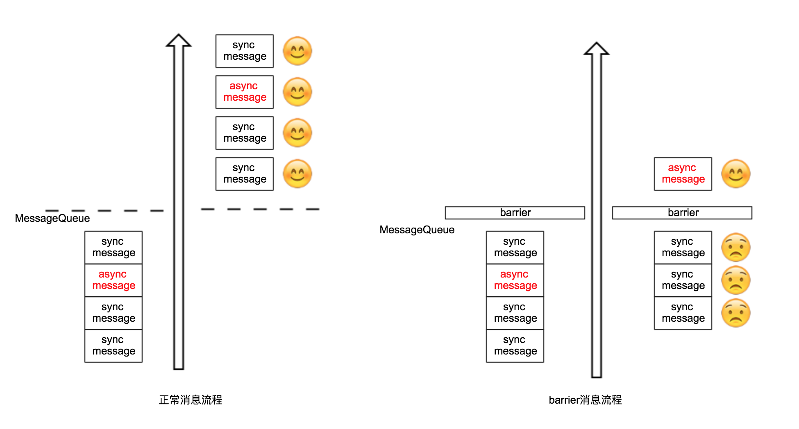
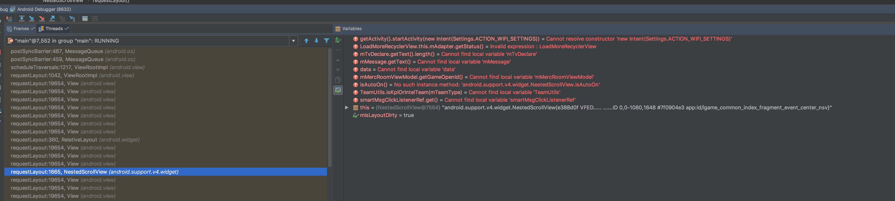

问题
最近项目中碰到一个诡异的问题，现象如下：
- IdleHandler机制失效了
- onStart()居然不回调了 (其实会被回调，但延时非常大，跟onStop()居然需要 10s 才会被执行中提到的现象类似)
由于IdleHandler和onStart()中有一些初始化逻辑，不及时执行会引起问题，导致出现一些奇怪的bug。最后定位出来这个诡异问题的原因是因为某段代码使用Handler不当，发送了大量Message，导致主线程负载过重。(主线程负载很重却又未出现明显卡顿)
分析问题过程中绕了很多弯，等到快得到结论时发现其实快速定位原因的方法居然很简单：通过Looper.setMessageLogging()方法监听主线程MessageQueue上的Message日志，观察日志很容易揪出那个不正常的家伙。
1 | 07-25 22:53:33.345 12819-12819/com.xxx.yyy I/IndexActivity: println: >>>>> Dispatching to Handler (com.xxx.yyy.view.common.widget.yyyTextSwitchView$ViewHandler) {2cefb4d} null: 1 |
上面的日志中yyyTextSwitchView$ViewHandler短时间内大量出现，必然有问题，围绕着它继续分析肯定能找出原因。细节这里就略过了。
而Looper.setMessageLogging()具体用法在Android之输出Handler日志中有讨论，这里不再展开。
我绕了不少弯，有些知识点是以前未掌握的，所以记录下来很有意义。
IdleHandler
IdleHandler简介
应用中有些任务很重要必须被执行，但时机上又没有那么迫切。于是便有了IdleHandler，它最适合处理这种场景，既能充分利用CPU但又不跟紧急任务争夺CPU。当线程没有message需要处理而阻塞时(简单来说就是线程空闲)，IdleHandler.queueIdle()被回调。queueIdle()返回false时将自动从MessageQueue中清理当前IdleHandler。
1 | public static interface IdleHandler { |
IdleHandler用法非常简单。
1 | Looper.myQueue().addIdleHandler(new MessageQueue.IdleHandler() { |
上面这段代码输出 1次 queueIdle after onPause。不过要是将return false改成return true，则会在空闲时间多次输出queueIdle after onPause，直到将这个IdleHandler移除。
Android系统中也有用到IdleHandler。见ActivityThread.scheduleGcIdler()。
1 | final class GcIdler implements MessageQueue.IdleHandler { |
源码分析
看看MessageQueue.next()方法是如何处理IdleHandler的。
1 | Message next() { |
正如文档所述，IdleHandler仅在线程空闲时才被执行。
- 如果队列中有消息，不会执行IdleHandler
- 每次
next()调用时IdleHandler最多只有一次被执行的机会
回到我们的问题，为什么IdleHandler不被执行？当然是因为队列中的消息太多，每次next()调用时都能找到一个待处理的Message，所以IdleHandler根本没有出场的机会。
队列中有哪些消息呢？Helper工具类可用于观察队列中的消息。代码整理自Activity 的 onStop 居然需要 10s 才会被执行？记一次艰辛的问题排查。
1 | public class Helper implements Choreographer.FrameCallback { |
调用Choreographer.getInstance().postFrameCallback(new Helper())，将输出每一帧队列中的消息。
barrier消息
打印出所有Message后，发现一个非常奇怪的消息。它没有target，字符串形式为{ when=-1ms barrier=105 }。所以不妨称之为barrier消息。
1 | 07-26 01:10:06.083 23987-23987/com.xxx.yyy I/IndexHelper: { when=-1ms barrier=105 } |
MessageQueue.next()中关于barrier消息的处理很特别。for循环中找下一条消息时，如果发现了barrier消息，会忽略之后所有的同步消息(当然，异步消息仍然正常处理)，不进行任务实际处理。也就是说，同步消息一直被保留在消息队列中没被处理。这种情况下，IdleHandler更没机会被执行！
1 | for (;;) { |
Activity 的 onStop 居然需要 10s 才会被执行？记一次艰辛的问题排查中提到了barrier消息问题。接下来看看到底什么是barrier消息。
什么是barrier消息
先找到发出barrier消息的地方，MessageQueue.postSyncBarrier()。
MessageQueue.postSyncBarrier()方法注释文档中对此有比较清楚的描述。
1 | /** |
翻译总结一下：
该方法向Looper的MessageQueue发送一个同步barrier消息。没有遇到barrier消息时一切按正常方式处理。遇到barrier消息时，队列中晚一些的同步消息被挂起，直到barrier消息被
removeSyncBarrier()方法移除
该方法用于立刻延迟所有同步消息，直到某个条件被满足时释放该barrier。异步消息不受barrier消息影响，仍然正常处理postSyncBarrier()调用一定要跟removeSyncBarrier()一同调用，并且使用同一个token参数，以保证MessageQueue中的消息可以恢复到正常处理状态。否则 应用很可能被挂起

postSyncBarrier()是一个隐藏的(@hide)方法，应用无法直接调用，通常应由Android系统调用。
谁在发送barrier消息
如何找到谁在发送barrier消息？方法很简单，在MessageQueue.postSyncBarrier()方法处断点调试。这个技巧参考自Activity 的 onStop 居然需要 10s 才会被执行？记一次艰辛的问题排查。
MessageQueue.postSyncBarrier()被调用时，会在断点处停下来。我们可以沿着调度信息找到调用方。

是ViewRootImpl.scheduleTraversals()方法发出了barrier消息，有点出乎我们意料？ViewRootImpl
1 | void scheduleTraversals() { |
简单解释一下ViewRootImpl.scheduleTraversals()为什么会发送barrier消息。
为了让View能够有快速的布局和绘制，android中定义了一个Barrier的概念，当View在绘制和布局时会向Looper中添加了Barrier(监控器)，这样后续的消息队列中的同步的消息将不会被执行，以免会影响到UI绘制 参考自Android Barrier Android 屏幕刷新机制
onStart和onStop
出于多种原因考虑，ActivityThread并不是立即回调onStart()或onStop()，而是在ActivityThread.H这个Hander中回调onStart()和onStop()。
ActivityThread.handleStopActivity()代码如下：
1 | private void handleStopActivity(IBinder token, boolean show, int configChanges, int seq) { |
很不幸，这个Handler和我们在主线程中创建的Handler共享同一个MessageQueue。大量向MessageQueue中发送消息时，会影响到onStart()或onStop()的处理速度。
总结
总结一下。
- 本文中提到的几个知识点：
- ActivityThread.H(Hander)中回调
onStart()和onStop() - ActivityThread.H和主线程中创建的Handler共享同一个MessageQueue
- 向MessageQueue发送大量消息时，可能影响到
onStart()或onStop()的响应速度 - IdleHandler可以用来处理一些不紧急的任务，比如ActivityThread使用它来执行gc任务
Looper.setMessageLogging()方法用于打印消息日志
- ActivityThread.H(Hander)中回调
- 最初提到的
onStart()不回调问题的原因- Hander用法错误，向MessageQueue中发送大量消息，影响到
onStart()或onStop()的响应速度
- Hander用法错误，向MessageQueue中发送大量消息，影响到
解决方案
Looper.setMessageLogging()方法打印消息日志，观察是否有异常消息- 使用上述Helper类打印当前MessageQueue中的所有Message，观察是否有异常消息
参考
- Activity 的 onStop 居然需要 10s 才会被执行？记一次艰辛的问题排查
- Android Handler Looper机制 | Jacks Blog
- 聊一聊Android的消息机制 - 悠然红茶的个人页面 - 开源中国
- android 利用Handler机制中SyncBarrier的特性实现预加载 - CSDN博客
- Android Handler Looper机制 | Jacks Blog
- Android应用程序消息处理机制 - 点点滴滴 - SegmentFault 思否
- 2.3.3 nativePollOnce函数分析 · 深入理解Android：卷2 · 看云
- Android消息循环机制（二）Looper性能检测的缺陷 - 简书
- Android Barrier - CSDN博客
- Android 屏幕刷新机制 - 请叫我大苏 - 博客园